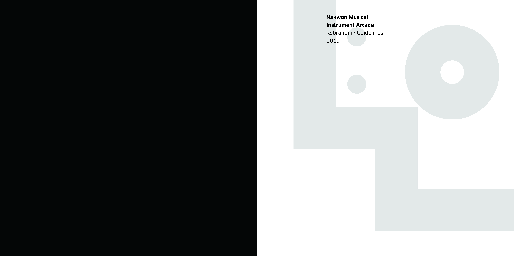
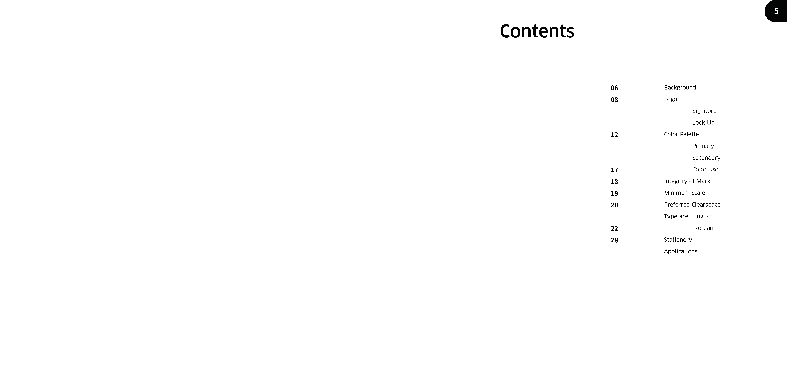
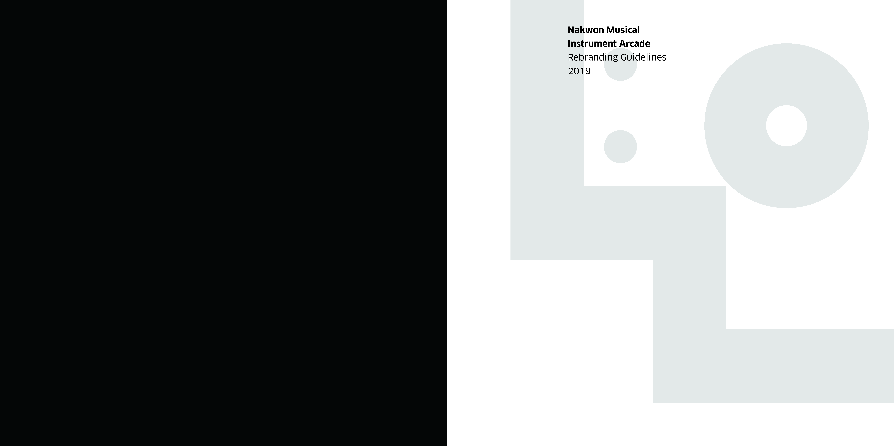
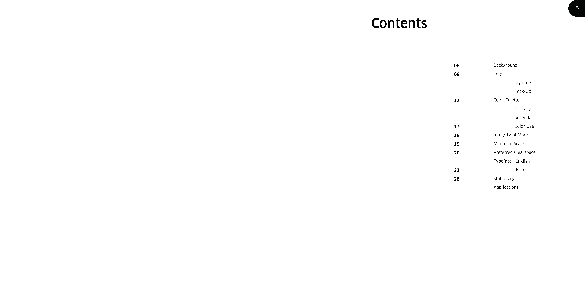
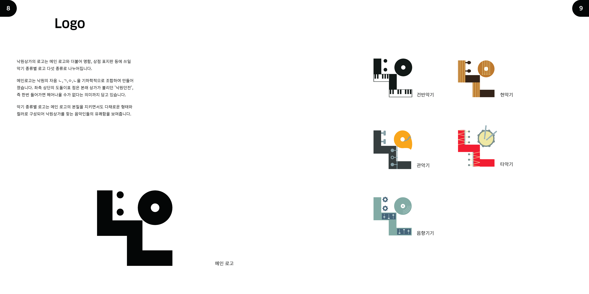
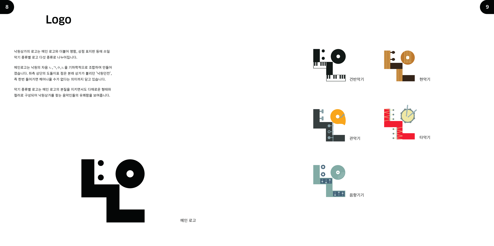

낙원상가
악기상점 낙원상가 개선 리브랜딩 (team work)
re-Branding
2019 May - Jun
낙원상가는 종로에 위치한 명실공히 세계에서 가장 큰 규모의 악기상점이다. 2층과 3층에는 300여 악기전문점들이 들어서있고, 4층과 5층에는 사무실, 합주연습실, 그리고 야외공연장과 영화관들이 있어 여러 사람이 모여 향유할 수 있는 하나의 공간이라고 할 수 있다.
이러한 낙원상가의 특징을 살려 이 곳을 즐거운 음악인들의 낙원, 또한 모두를 위한 낙원으로 자리매김시키기 위한 리브랜딩을 기획했다.
*Nakwon Musical Instrument Arcade is the world's largest musical instrument store located in Jongno. There are more than 300 musical instrument stores on the 2nd and 3rd floors, and on the 4th and 5th floors there are offices, concert halls, and outdoor performance halls and movie theaters.
Taking advantage of these characteristics of Nakwon, we planned a rebranding to make this place a pleasant musician's paradise and also a paradise for everyone.
*Nakwon: 'paradise' in Korean
 



 
